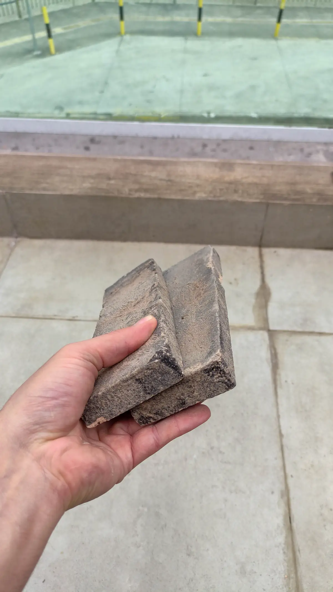
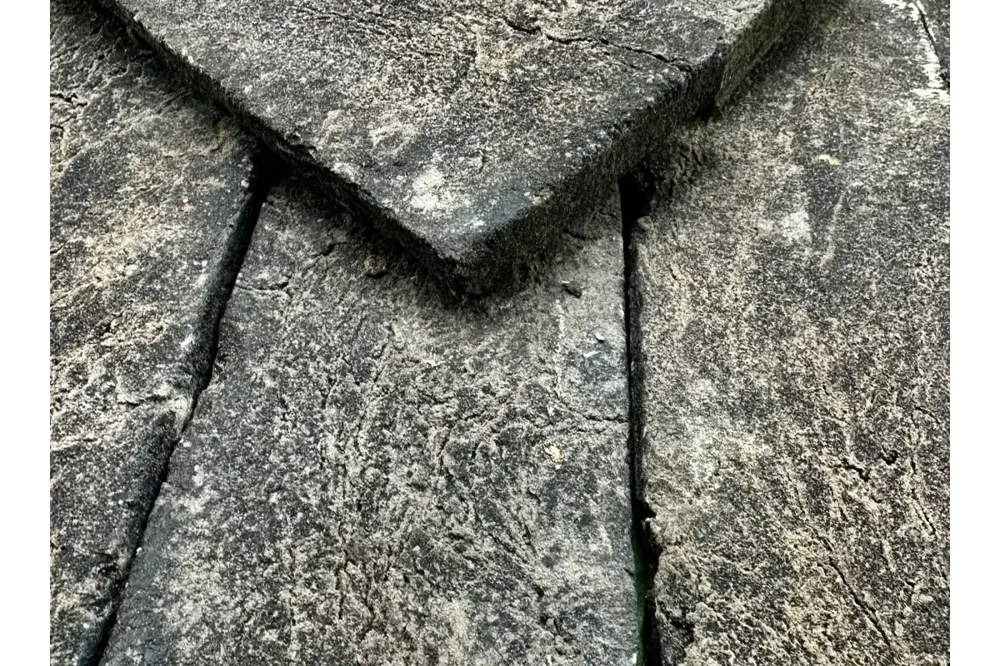

Erro 1 — Base mal preparada
É o erro mais comum e o mais custoso de corrigir depois. A superfície precisa estar seca, livre de poeira, gordura e resíduos de pintura. Em reboco novo, aguarde no mínimo 28 dias de cura antes de aplicar qualquer revestimento. Paredes muito lisas ou pintadas com tinta PVA precisam de chapisco ou primer específico para garantir aderência — sem esse passo, o tijolinho pode soltar meses depois. Se você ainda não começou a instalação, vale seguir nosso guia completo de aplicação passo a passo.

Erro 2 — Argamassa errada ou mal preparada
Para o Brick, a argamassa correta é AC-II ou AC-III. A AC-I (uso geral) não tem aderência suficiente para revestimentos cerâmicos com peso e espessura como o tijolinho artesanal. Outro erro frequente é adicionar água em excesso para facilitar o espalhamento — isso dilui o adesivo e reduz drasticamente a resistência da colagem. Siga sempre as proporções indicadas na embalagem.
Teste a consistência da argamassa com o dedo: ela deve escorregar levemente mas não pingar. Se formar picos que se sustentam, está no ponto ideal. Se escorrer livremente, está líquida demais.
Erro 3 — Não misturar peças de lotes diferentes
O tijolinho artesanal tem variação natural de tonalidade entre queimas diferentes. Aplicar uma caixa inteira por vez cria blocos de cor visíveis na parede — o resultado parece "remendado". A solução é simples: abra pelo menos três caixas diferentes antes de começar e misture as peças aleatoriamente durante a aplicação. A variação fica distribuída naturalmente e o efeito artesanal se potencializa.

Erro 4 — Trabalhar em área grande de uma vez
A argamassa tem um tempo de trabalho limitado — geralmente entre 20 e 30 minutos após aplicada na parede. Espalhá-la em uma área grande demais faz com que ela comece a secar antes de todas as peças serem assentadas. Isso resulta em aderência fraca em partes da parede. Trabalhe em seções de no máximo 60x60cm, especialmente em dias quentes ou com vento.
Erro 5 — Rejuntar cedo demais
O rejunte aplicado antes da cura completa da argamassa pode contaminar a junta com microtrincas e manchas. Aguarde pelo menos 24 horas em condições normais — ou até 72 horas em ambientes com alta umidade ou baixa temperatura. Além disso, remova o excesso de rejunte antes que seque por completo: depois de curado, a limpeza é muito mais difícil e pode exigir produtos ácidos que agridem a superfície da peça. Depois de instalado, a manutenção correta também faz diferença — veja nosso guia de limpeza e manutenção.